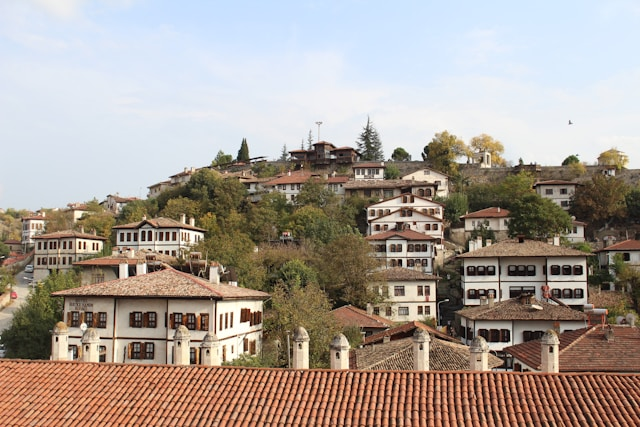

Yaşam Haberleri
Anasayfa
Gündem
Ekonomi
Yaşam
Sağlık

UNESCO Dünya Miras Listesi’nde yer alan Karabük’ün Safranbolu ilçesine
Belçika’nın Damme kentinde düzenlenen törenle ‘Sakin Şehir’ ünvanı verildi.
arihi yapıları, yöresel ürünleri ve doğal güzellikleriyle Türkiye’nin eşsiz ilçelerinden olan Safranbolu,
Türkiye’nin 25’inci sakin şehri oldu.
Safranbolu Belediye Başkanı Elif Köse, 1,5 yıl önce ‘Sakin Şehir’ ağına katılmak için çalışmalara başladıklarını ifade ederek,
"Safranbolu kent ölçeğinde UNESCO Dünya Mirası’nda yer alan Türkiye’de tek, dünyada 20 kentten birisi. Biz bu marka şehre bir
eklemek istedik.